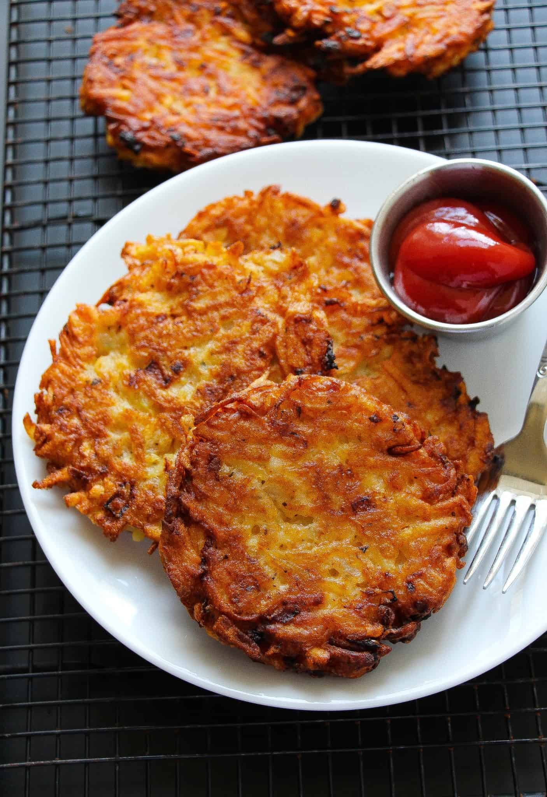

Hashbrown

Description
This cheesy hashbrown casserole has lots of Cheddar and a crunchy cornflake topping.
Ingredients
- 1 (2 pound) package frozen hash brown potatoes, thawed
- 2 cups shredded Cheddar cheese
- 1 (10.5 ounce) can condensed cream of chicken soup
- 1 (8 ounce) container sour cream
- ¾ cup butter, melted, divided
Steps
- Gather all ingredients and preheat the oven to 350 degrees F (175 degrees C).
- Combine hash browns, Cheddar cheese, condensed soup, sour cream, 1/2 cup melted butter, onion, salt, and pepper in a large bowl.
- Transfer mixture to a 3-quart casserole dish.
- Sauté cornflakes and remaining 1/4 cup melted butter in a saucepan over medium heat.
- Cover casserole and bake in the preheated oven for 40 minutes.